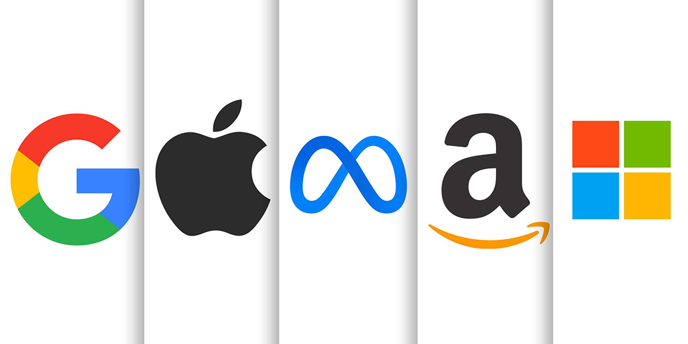

TOP PRODUCT BASED COMPANIES IN INDIA
Gaurav Jha | 30th October, 2022

Whether we like it or not, there are a very small handful of tech companies that dominate the tech industry as a whole. The FAANG companies, also known as MAMAA, Big Tech, or the Big Five, originally started as a stock market term to describe the newest and hottest heavy hitters in the industry—the most prominent technology companies in the country—and has remained a popular term to describe the big five.
The FAANG acronym represents Meta (formerly Facebook), Apple, Amazon, Netflix, and Alphabet (the “G” refers to Google). Although the acronym was first coined in the financial world, it’s commonly used in everyday vernacular to describe the major players in the world of American technology.
If you’re still trying to wrap your head around where and why the FAANG acronym came about, you’ll want to read on. Below you’ll find exactly what it means to be a FAANG company, what the leaders in tech are doing to retain their employees, and where the stock market term might go from here:
WHAT IS A FAANG COMPANY?
The term “FAANG company” refers to the five largest and best performing American technology companies. The term was first coined by Bob Lang of The Street but became a household phrase when television personality Jim Cramer started using the term on his Mad Money program on CNBC.
The term FAANG is most often used in the finance world to describe the largest tech company stocks—”FAANG stocks”—but is also commonly used to describe the Big Tech or Big Five companies in general.
FAANG refers to Meta (formerly Facebook), Apple, Amazon, Netflix, and Alphabet (Google). However, due to the recent company rebranding from Facebook and Microsoft becoming the world’s most valuable publicly traded company, Cramer has recently suggested changing the term FAANG to MAMAA. That’s Meta, Alphabet, Microsoft, Amazon, and Apple.
WHICH FAANG COMPANY PAYS THE MOST?
The five FAANG tech companies all have reputations for providing staffers with high compensation packages—but depending on the field and scope of employment there are certain FAANG companies that outdo others when it comes to the best salaries. Each company has its own unique pay structure that differs based on experience and positions.
For software engineering positions, for example, the earning potential at Alphabet (Google) can range anywhere from $191,000 to $1.02 million, depending on experience and job title.
The five FAANG companies also promote perks and flexible work schedules (including, in many cases, the flexibility to work remotely). Meta (Facebook), for example, provides employees with free gym memberships, ample parental leave and adoption assistance, up to $3,000 in babysitter reimbursement and plenty of other family benefits.
WHY IS MICROSOFT NOT FAANG?
It’s understandable to wonder why Microsoft isn’t part of the FAANG acronym when it’s one of the largest tech companies on the planet—but there’s a simple explanation as to why it didn’t make the cut. FAANG was originally a stock market term to describe new and hot tech stocks, and, at the time, Microsoft was not considered new or hot, despite its steady success.
That said, Microsoft was recently included in Jim Cramer’s updated and more comprehensive MAMAA acronym when it was named the most valuable stock of all time. The latest stock market term—which Cramer states is the new FAANG—includes Meta, Alphabet, Microsoft, Amazon, and Apple.